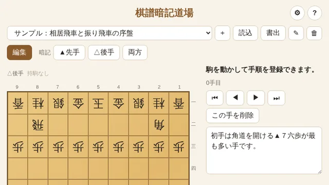
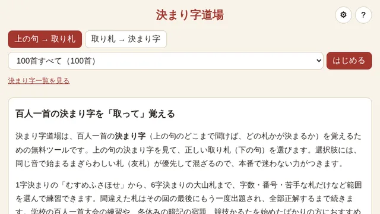
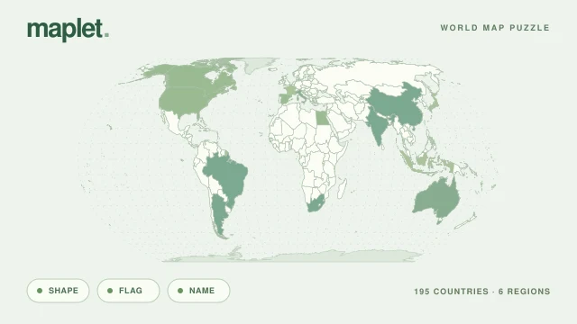
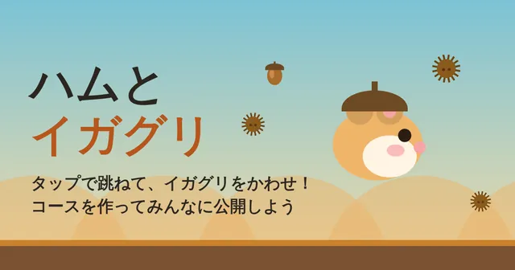
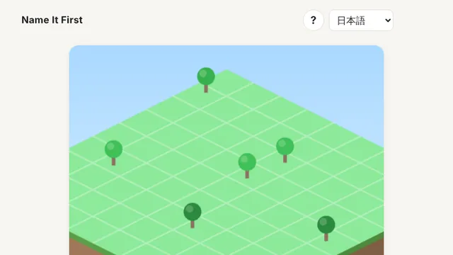
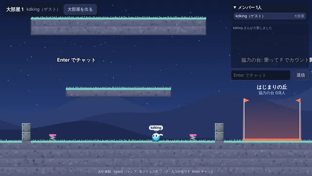

TOOLS
できること、いろいろ。
ブラウザから使える、7つのツール。
学ぶ
自分のペースで、身につける。
-

将棋 / 定跡練習
棋譜暗記道場
定跡は、指して覚える。
棋譜の変化を整理して、先手・後手の手順を盤上で練習。KIFファイルの読み込み・書き出しにも対応しています。
使ってみる -

百人一首 / 決まり字
決まり字道場
覚えたい札から、少しずつ。
百人一首の決まり字を、取り札を選んで練習。字数別や苦手な札に絞って、まぎらわしい友札も覚えられます。
使ってみる -

地理 / 世界地図パズル
Maplet
世界を、ひとつずつ。
国の形・国旗・国名を切り替えながら、世界地図に国を置くパズル。195か国を地域別や世界全体で練習でき、日本語・英語にも対応しています。
遊んで覚える
遊ぶ
ひと息ついたら、もう一回。
-

アクション / コースづくり
ハムとイガグリ
よけて、作って、友だちと遊ぶ。
ハムスターをジャンプさせて、転がるイガグリをよけるゲーム。自分で作ったコースやフレンドとの対戦も楽しめます。
遊んでみる -

名前づけ / ひらめき
Name It First
新しい名前で、街が育つ。
まだ登録されていない名前を見つけるゲーム。名前を増やすたびに住人が増え、自分の街が大きくなります。
遊んでみる -

オンライン / 協力アクション
ツナグラン
フックでつながる、協力プレイ。
仲間とフックやハンマーで助け合いながら進むアクションゲーム。ブラウザからゲストで参加できます。
遊んでみる
調べる
気になることを、数字から。
ABOUT
小さな不便も、
小さな好奇心も。
覚えたい手順や国の位置を、繰り返し練習したい。
友だちと、ちょっと変わったゲームで遊びたい。
気になる組み合わせを、データで見てみたい。
kdking toolsは、そんな身近な「ほしい」から生まれたツールを、個人で開発・公開しているサイトです。開いてすぐに使い方が伝わることを大切に、少しずつ育てています。
運営者についてログインが必要な機能や、データの保存・送信方法はツールによって異なります。詳しくはプライバシーポリシーをご確認ください。